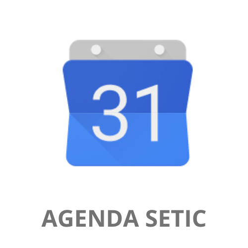
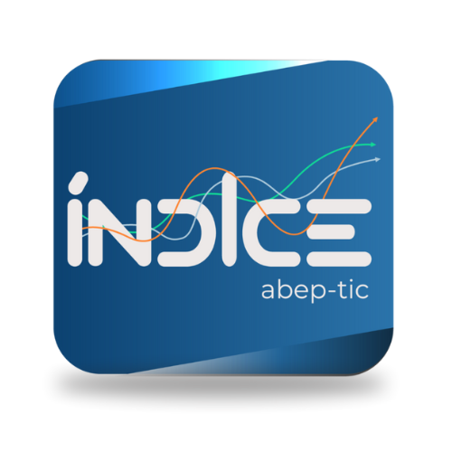
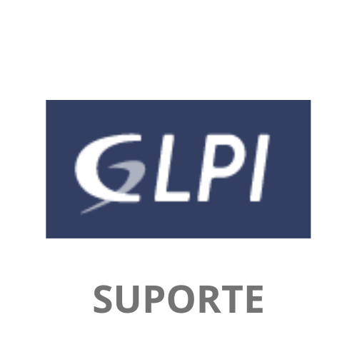
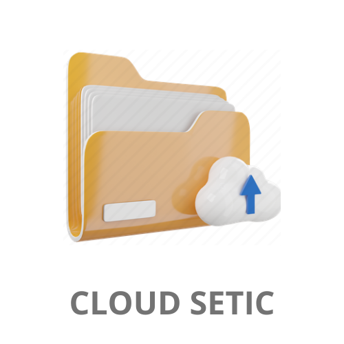
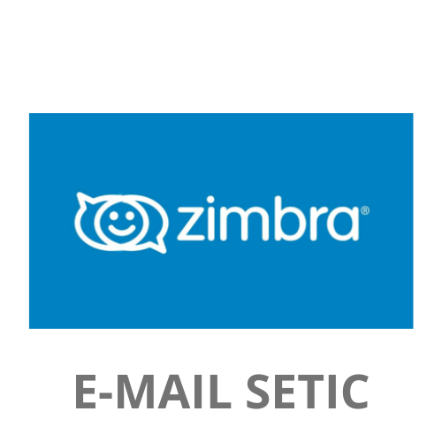
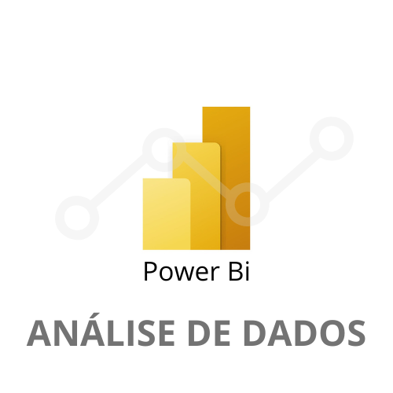

Principais Sistemas de Acessos Diários
Acesse abaixo os principais Sistemas gerenciados pela Superintendência Estadual de Tecnologia da Informação e Comunicação - SETIC/RO

Agenda Setic
Agenda Google da Setic RO

Painel Índice - ABEP
Índice de Oferta de Serviços Públicos Digitais

GLPI Suporte
Sistema de Abertura de Chamados

Cloud Setic
Sistema Drive de Arquivos em Núvem - Setic

Email Zimbra Setic
Ferramenta de Gerenciamento de E-Mails - Setic

Sistema de Estatísticas GOV RO - Power Bi
Sistema responsável pelo demonstrativo de Paineis dos Portais Dashboard Setic